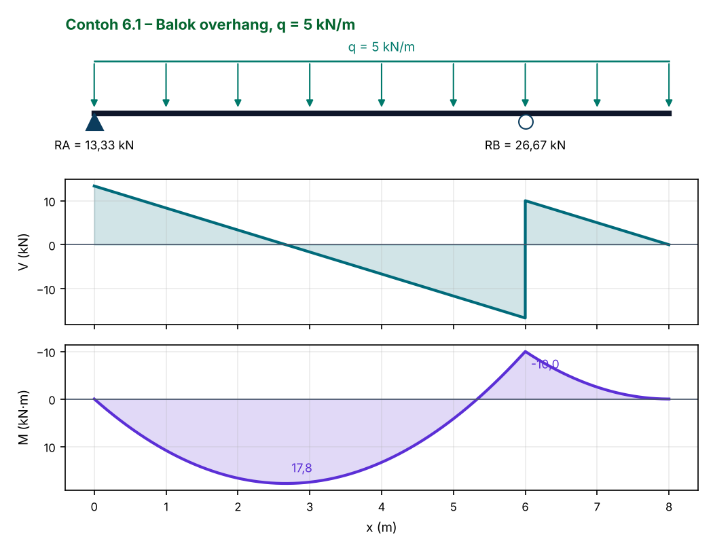
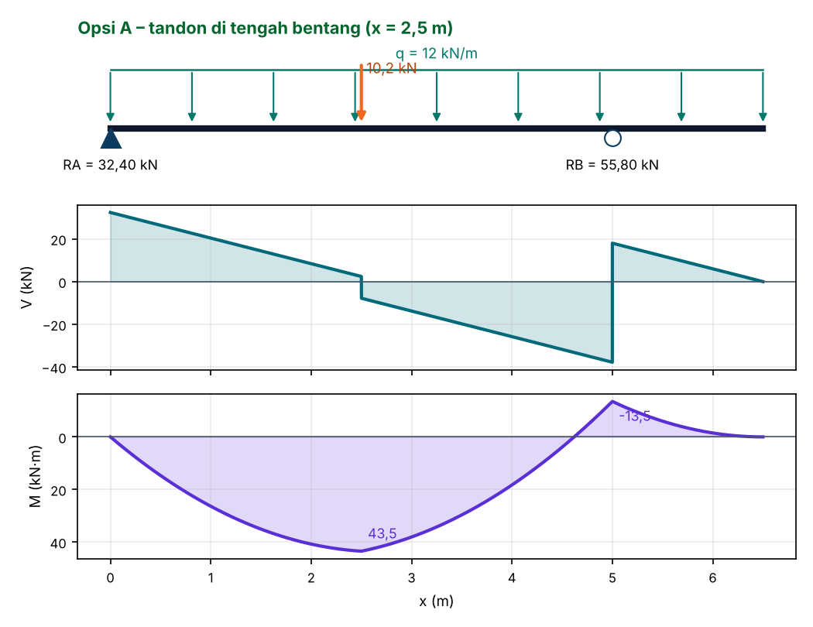
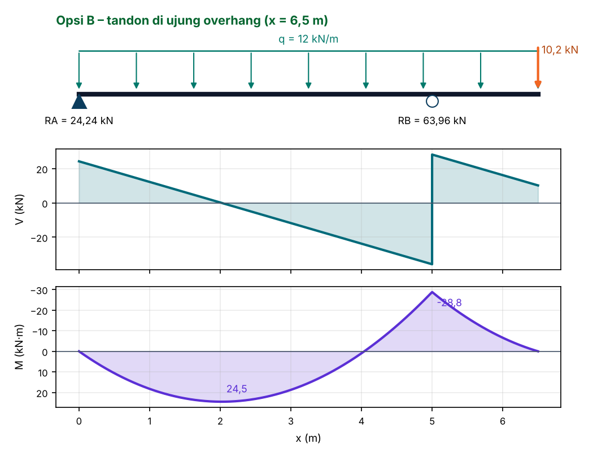
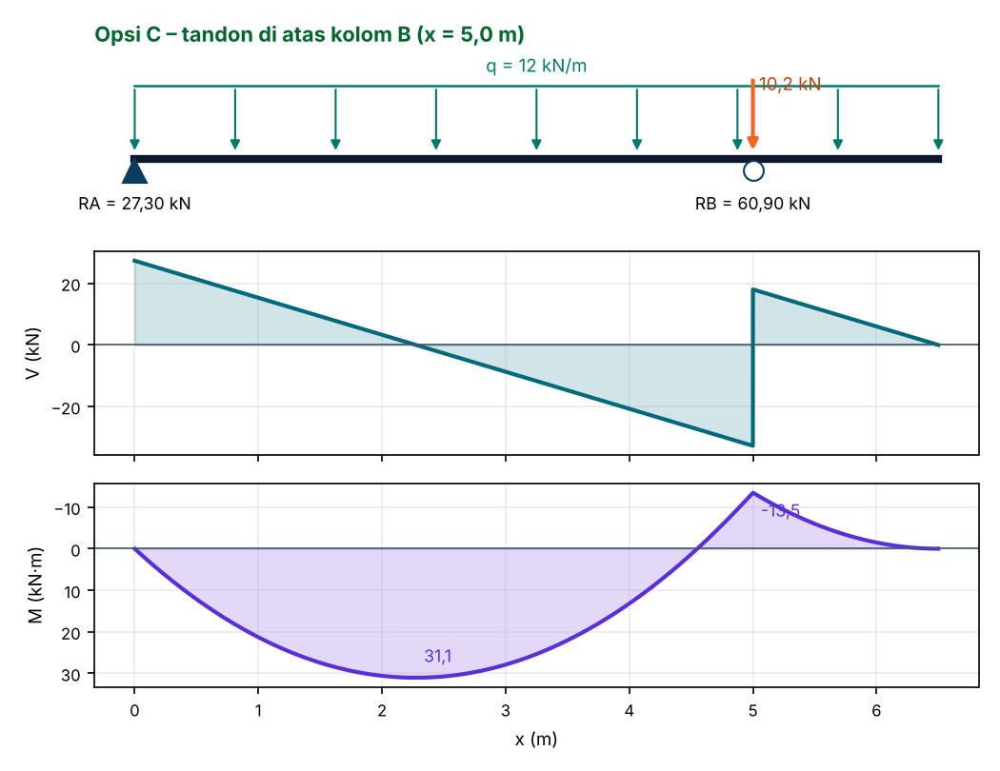

Minggu 6 • Sub-CPMK 2.3 • CPMK-2 • CPL 2 / IK 2.2 • Case Method 2 (bobot 9%) • Estimasi belajar: 120 menit mandiri + 220 menit kelas/studio
2. Capaian Pembelajaran
Sub-CPMK 2.3: Mahasiswa mampu mengevaluasi balok overhang dengan beban tambahan.
| Kode | Indikator | Level Bloom |
|---|---|---|
| 2.3.a | Menghitung reaksi dan gaya dalam balok overhang | C3 – menghitung |
| 2.3.b | Menghitung gaya dalam akibat beban segitiga dan trapesium | C3 – menghitung |
| 2.3.c | Menentukan momen maksimum positif, momen negatif di tumpuan, dan titik momen nol | C4 – menganalisis |
| 2.3.d | Membandingkan beberapa opsi penempatan beban berdasarkan diagram momen | C4 – membandingkan |
| 2.3.e | Memutuskan dan mempertahankan rekomendasi teknis (Case Method 2) | C5 – mengevaluasi |
Kriteria (RPS): keputusan didukung perhitungan momen maksimum dan lokasi titik balik (titik momen nol).
3. Peta Konsep Bab
SFD/BMD (Bab 5) → (6.1) balok overhang: momen negatif di tumpuan + positif di bentang
Beban terdistribusi (Bab 2) → (6.2) beban segitiga dan trapesium: V parabola, M kubik
BMD → (6.3) Mmaks, momen tumpuan, titik momen nol
Semua → (6.4) Case Method 2: tandon 1.000 L di balok ruko → Bab 7 (balok Gerber)
4. Apersepsi
Kasus nyata: Pemilik ruko dua lantai di Padang ingin menambah tandon air 1.000 liter di lantai 2 karena tekanan air PDAM lemah. Ia bertanya kepada tukang: “Tandon ditaruh di mana saja boleh, kan? Toh lantainya beton.”
Pertanyaan pemantik: Apakah letak tandon (di tengah ruangan, di teras yang menjorok, atau di dekat kolom) berpengaruh? Mengapa?
Gambar 6.1. Ruko dengan teras menjorok dan rencana letak tandon (ilustrasi baru, sumber: dokumen penulis)
Teks alternatif: Potongan ruko dua lantai: balok lantai 2 di atas dua kolom dengan teras menjorok 1,5 m ke depan; tiga posisi tandon alternatif ditandai A, B, C.
Prompt gambar: Cross-section illustration of a two-storey Indonesian shophouse (ruko) with a second-floor beam on two columns and a 1.5 m cantilevered front balcony, three alternative water tank positions highlighted with glowing orange markers, technical educational style, navy background, no text
5. Uraian Materi
6.1 Balok Overhang
Balok overhang (balok dengan ujung menggantung) adalah balok sendi–rol yang salah satu atau kedua ujungnya menjorok melewati tumpuan – misalnya balok teras ruko atau balok kanopi yang ditumpu kolom. Ciri utamanya: momen negatif di tumpuan dekat bagian menjorok dan momen positif di bentang.
Di antara kedua daerah itu terdapat titik momen nol (sering disebut titik balik). Titik ini penting di lapangan karena menjadi acuan sambungan/penghentian tulangan.
Keterangan: M_B = momen di tumpuan dekat overhang (kN·m); a = panjang overhang (m); q = beban merata pada overhang (kN/m); P_ujung = beban titik di ujung overhang (kN). Batasan: hanya bagian overhang yang dihitung (dari kanan potongan).

Gambar 6.2. SFD dan BMD balok overhang Contoh 6.1.
6.2 Beban Segitiga dan Trapesium
Beban segitiga muncul dari tekanan tanah/air atau pembagian beban pelat ke balok (metode amplop). Beban trapesium adalah gabungan beban merata dan segitiga.
Keterangan: q = intensitas maksimum di ujung B (kN/m); x diukur dari ujung beban nol (A). Batasan: khusus beban segitiga penuh pada balok sederhana.

Gambar 6.3. SFD dan BMD beban trapesium Contoh 6.4.
6.3 Momen Maksimum dan Titik Momen Nol
Mmaks positif: cari x saat V = 0 di bentang, atau titik saat V berganti tanda karena beban titik.
Momen negatif: hitung di tumpuan dekat overhang dari sisi overhang.
Titik momen nol: selesaikan M(x) = 0 di bentang.
Bandingkan |Mmaks positif| dan |M negatif|: yang lebih besar menentukan kebutuhan tulangan bawah/atas.
6.4 Case Method 2 – Tandon 1.000 L di Balok Lantai Ruko
Peran: kelompok sebagai konsultan yang harus memberi keputusan kepada pemilik ruko. Waktu: 70 menit + presentasi 5 menit. Bobot: 9% (CPMK-2), rubrik Case Method RPS.
Data kasus (disederhanakan untuk pembelajaran): balok lantai 2: sendi A (x = 0), rol B di kolom depan (x = 5 m), teras menjorok BC = 1,5 m. Beban merata eksisting q = 12 kN/m (pelat, finishing, dinding ringan, beban hidup). Tandon 1.000 L + tandon kosong = 10,2 kN (beban titik). Dari dokumen perencanaan lama, kapasitas momen izin balok: lapangan 40 kN·m dan tumpuan B 30 kN·m (angka data kasus, bukan nilai standar).
Tugas kelompok:
Hitung reaksi, Mmaks lapangan, dan M_B untuk kondisi tanpa tandon.
Hitung kembali untuk tiga opsi: A – tandon di tengah bentang (x = 2,5 m); B – di ujung teras (x = 6,5 m); C – tepat di atas kolom B (x = 5 m).
Gambarkan SFD dan BMD tiap opsi (boleh dengan Alat Hitung) dan bandingkan dengan kapasitas izin.
Putuskan opsi terbaik dan tuliskan alasan (keamanan, biaya, kemudahan pelaksanaan).
Presentasikan; jawab pertanyaan “Bagaimana jika pemilik tetap ingin di teras?”
| Kondisi | RA (kN) | RB (kN) | Mmaks lapangan (kN·m) | M_B (kN·m) | Terhadap izin 40 / 30 |
|---|---|---|---|---|---|
| Tanpa tandon | 27,30 | 50,70 | 31,05 @2,28 m | –13,50 | Aman / aman |
| Opsi A – tengah bentang | 32,40 | 55,80 | 43,50 @2,50 m | –13,50 | **Melebihi** lapangan / aman |
| Opsi B – ujung teras | 24,24 | 63,96 | 24,48 @2,02 m | –28,80 | Aman / **hampir batas** (96%) |
| Opsi C – di atas kolom B | 27,30 | 60,90 | 31,05 @2,28 m | –13,50 | Aman / aman |
Tabel di atas adalah kunci dosen (dihitung ulang secara numerik); pada versi mahasiswa tabel ini kosong.

Gambar 6.4. Opsi A – tandon di tengah bentang: momen lapangan naik menjadi 43,5 kN·m.

Gambar 6.5. Opsi B – tandon di ujung teras: momen tumpuan B naik menjadi –28,8 kN·m.

Gambar 6.6. Opsi C – tandon di atas kolom B: momen tidak berubah, beban langsung ke kolom.
Kunci keputusan: Opsi C terbaik – beban langsung diterima kolom, momen balok tidak bertambah (RB naik 10,2 kN; kolom dan fondasi perlu dicek di mata kuliah lanjut). Opsi A ditolak karena melampaui kapasitas lapangan (43,5 > 40). Opsi B tidak dianjurkan karena margin tipis (28,8/30 = 96%) dan teras menjorok rawan beban tambahan (orang, pot bunga).
6. Contoh Soal & Pembahasan
Empat contoh (6.1–6.4) ditambah tabel perbandingan Case Method 2. Semua nilai diperiksa dengan perhitungan numerik.
7. Tanya AI Tutor
Jelaskan lebih sederhana
Jelaskan mengapa beban di ujung teras ruko mengurangi momen di tengah balok tetapi menambah momen di kolom, dengan analogi jungkat-jungkit.
Pendamping Case Method 2
Kami konsultan untuk tandon ruko. Jangan beri jawaban. Tanyakan 4 hal yang harus kami pertimbangkan sebelum memilih letak tandon.
Periksa jawabanku
Ini hitungan titik momen nol saya: [tempel]. Apakah persamaan M(x) saya benar? Bimbing saya.
Buat soal latihan
Buat 3 soal balok overhang dengan beban trapesium. Sembunyikan jawaban.
Ringkas bab ini
Ringkas Bab 6: langkah mencari Mmaks, M tumpuan, dan titik momen nol.
8. Zona AR – Balok Ruko dengan Tandon
| Aspek | Spesifikasi |
|---|---|
| Nama objek | ar-bab06-ruko-tandon.glb (+ .usdz) |
| Tujuan belajar | Melihat pengaruh letak tandon terhadap lendutan dan momen balok overhang (indikator 2.3.d) |
| Pembuatan model | Revit: potongan ruko 2 lantai (balok, kolom, teras 1,5 m, tandon); Blender: animasi tandon pindah posisi; GLB ≤ 9 MB |
| Hotspot & label | (1) Kolom A dan B; (2) Teras overhang; (3) Posisi tandon A/B/C; (4) Zona momen positif (tarik bawah) dan negatif (tarik atas); (5) Titik momen nol |
| Animasi | Tombol A/B/C memindahkan tandon; lendutan dibesarkan visual dan label Mmaks/M_B berubah |
| Kode QR | Menuju ar/bab-06.html |
| Cadangan | Gambar 6.4–6.6 dan video rotasi |
| Pertanyaan pengamatan | (a) Opsi mana yang membuat teras melendut paling besar? (b) Di mana titik momen nol berpindah saat tandon di teras? (c) Mengapa opsi C “tidak mengubah” diagram momen? |
- Opsi C: tandon di atas kolom
- Teras menjorok 1,5 m
- Kolom B
Buka halaman AR penuh • Perangkat tanpa AR tetap dapat memutar model 360° dengan jari/tetikus.
9. Alat Hitung – Balok Overhang & Beban Kombinasi
| Aspek | Spesifikasi |
|---|---|
| Tujuan | Reaksi, SFD, BMD, Mmaks, M tumpuan, titik momen nol untuk balok overhang satu/dua sisi dengan beban titik, merata parsial, segitiga, trapesium |
| Rumus | \(\frac{dV}{dx}=-q;\ \frac{dM}{dx}=V;\ M(x_0)=0\ \text{(akar dicari numerik)}\) |
| Input | Posisi tumpuan A dan B (m), panjang total (m; ≤ 30); beban seperti Bab 5; kapasitas izin (opsional) untuk perbandingan |
| Output | RA, RB; Mmaks+ dan lokasinya; M di tiap tumpuan; titik momen nol; rasio terhadap kapasitas izin dengan warna hijau/kuning/merah |
| Mode Case Method | Tombol “Bandingkan opsi”: hingga 4 skenario berdampingan (tabel + grafik) |
| Validasi & fitur | Tumpuan harus di dalam panjang balok; peringatan bila RA < 0 (“Tumpuan A terangkat – periksa angkur”); reset; salin; ekspor CSV/PDF |
| Kasus uji | Input | Hasil yang diharapkan | Rujukan |
|---|---|---|---|
| 1 | L = 8; A = 0; B = 6; q = 5 penuh | RA = 13,33; RB = 26,67; M+ = 17,78 @2,67; M_B = –10,00; nol @5,33 | Contoh 6.1 |
| 2 | L = 5,5; A = 0; B = 4; q = 3 (0–4); P = 6 @5,5 | RA = 3,75; RB = 14,25; M+ = 2,34; M_B = –9,00 | Contoh 6.2 |
| 3 | L = 6; trapesium 2 → 5 | RA = 9,00; RB = 12,00; Mmaks = 15,83 @3,21 | Contoh 6.4 |
| 4 | Ruko opsi B: L = 6,5; B = 5; q = 12; P = 10,2 @6,5 | RA = 24,24; M+ = 24,48; M_B = –28,80 | Case Method 2 |
10. Studi Kasus / Proyek
Case Method 2 disajikan lengkap di subbab 6.4.
11. Info Penting / Tips Lapangan / Peringatan K3
Ketiga kotak ada di subbab 6.3.
12. Rangkuman
Balok overhang: momen negatif di tumpuan dekat overhang, positif di bentang, dipisah titik momen nol.
Beban di ujung overhang menurunkan momen lapangan tetapi menaikkan momen tumpuan; RA bisa menjadi negatif.
Beban segitiga penuh: RA = qL/6, RB = qL/3, Mmaks = qL²/(9√3) di x = L/√3; trapesium = persegi panjang + segitiga.
Mmaks dicari di V = 0; titik momen nol dari M(x) = 0.
Keputusan teknis harus membandingkan beberapa opsi terhadap kapasitas, bukan hanya satu angka.
13. Latihan & Kuis Interaktif (11 soal)
Balok overhang adalah …
Pembahasan: Lihat 6.1.
Pada balok overhang, momen di tumpuan dekat overhang bernilai negatif.
Pembahasan: Tarik di sisi atas.
Overhang 2 m dengan q = 6 kN/m (tanpa beban titik). M_B = … kN·m
Pembahasan: –6 × 4 ÷ 2.
Overhang 1,5 m dengan beban titik 8 kN di ujung. M_B = … kN·m
Pembahasan: –8 × 1,5.
Balok sederhana 9 m, beban segitiga 0 → 6 kN/m. RA = … kN; RB = … kN
Pembahasan: qL/6 dan qL/3.
Soal no. 5: lokasi Mmaks dari A = … m
Pembahasan: L/√3 = 9/1,732.
Trapesium 3 → 6 kN/m pada balok 4 m: resultan total = … kN
Pembahasan: 3 × 4 + ½ × 3 × 4.
Contoh 6.1: jika overhang diperpanjang menjadi 3 m (beban tetap 5 kN/m), M_B = … kN·m
Pembahasan: –5 × 9 ÷ 2.
Menambah beban di ujung overhang menyebabkan …
Pembahasan: Lihat Info Penting 6.3.
Pemilik ruko ingin tandon di tengah ruangan (Opsi A). Tanggapan konsultan yang tepat …
Pembahasan: Lihat tabel Case Method 2.
Pemilik tetap ingin tandon di teras. Rancang satu solusi struktural sederhana dan jelaskan pengaruhnya pada diagram momen.
Pembahasan: Solusi membuat beban tandon langsung ke tumpuan baru, momen negatif di B berkurang drastis. Rubrik: ide aman 40, analisis diagram 40, komunikasi 20.
14. Refleksi Diri
Saya dapat menghitung reaksi balok overhang. 1 2 3 4 5
Saya dapat mencari Mmaks, M tumpuan, dan titik momen nol. 1 2 3 4 5
Saya dapat menghitung beban segitiga dan trapesium. 1 2 3 4 5
Saya dapat mempertahankan keputusan teknis dengan data. 1 2 3 4 5
Apa yang sudah/belum saya pahami? • Tindak lanjut: skor ≤ 3 → ulangi Contoh 6.1 dan 6.2 dengan Alat Hitung mode “Bandingkan opsi”.
15. Glosarium dan Referensi Bab
| Istilah | Arti |
|---|---|
| Balok overhang | Balok sendi–rol dengan ujung menjorok melewati tumpuan. |
| Beban trapesium | Beban terdistribusi yang intensitasnya berubah linear tetapi tidak dimulai dari nol. |
| Kapasitas momen izin | Momen terbesar yang boleh dipikul penampang (dibahas rinci di Struktur Beton I). |
| Momen negatif | Momen yang membuat tarik di sisi atas balok. |
| Titik momen nol | Titik di mana momen lentur berganti tanda (titik balik). |
Hibbeler, R. C. (2024b). Structural analysis (11th ed.). Pearson. (Bab 4)
Hibbeler, R. C. (2024a). Engineering mechanics: Statics (15th ed., SI units). Pearson. (Bab 7)
Badan Standardisasi Nasional. (2020). SNI 1727:2020 Beban desain minimum dan kriteria terkait untuk bangunan gedung dan struktur lain. BSN.